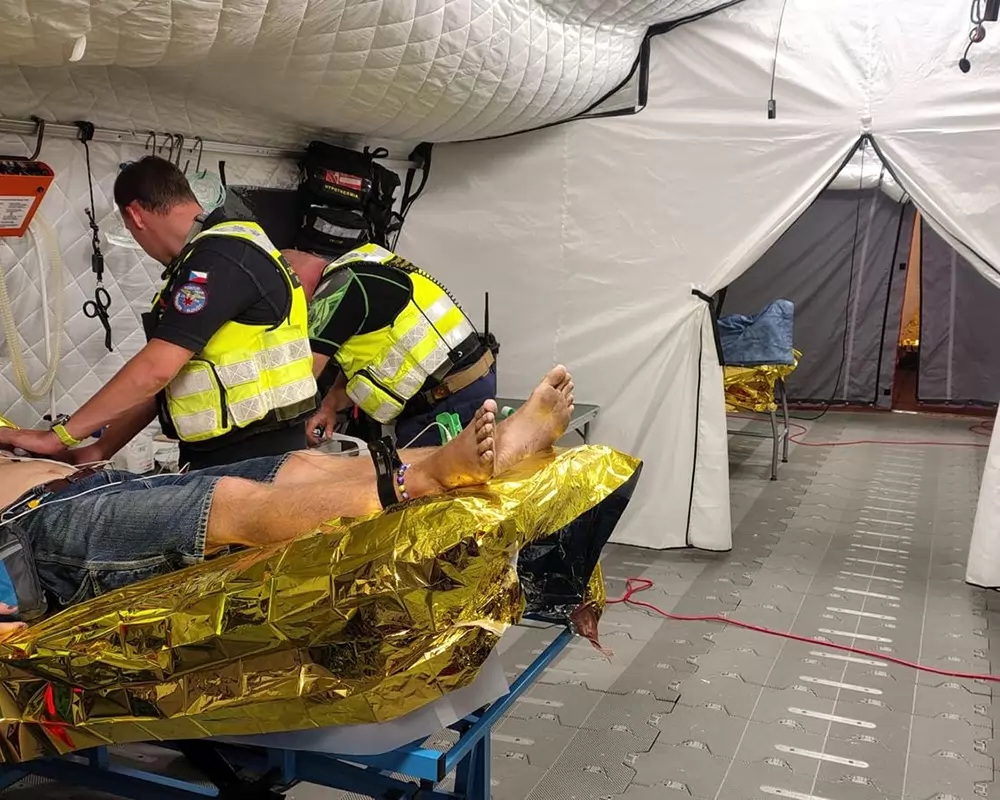
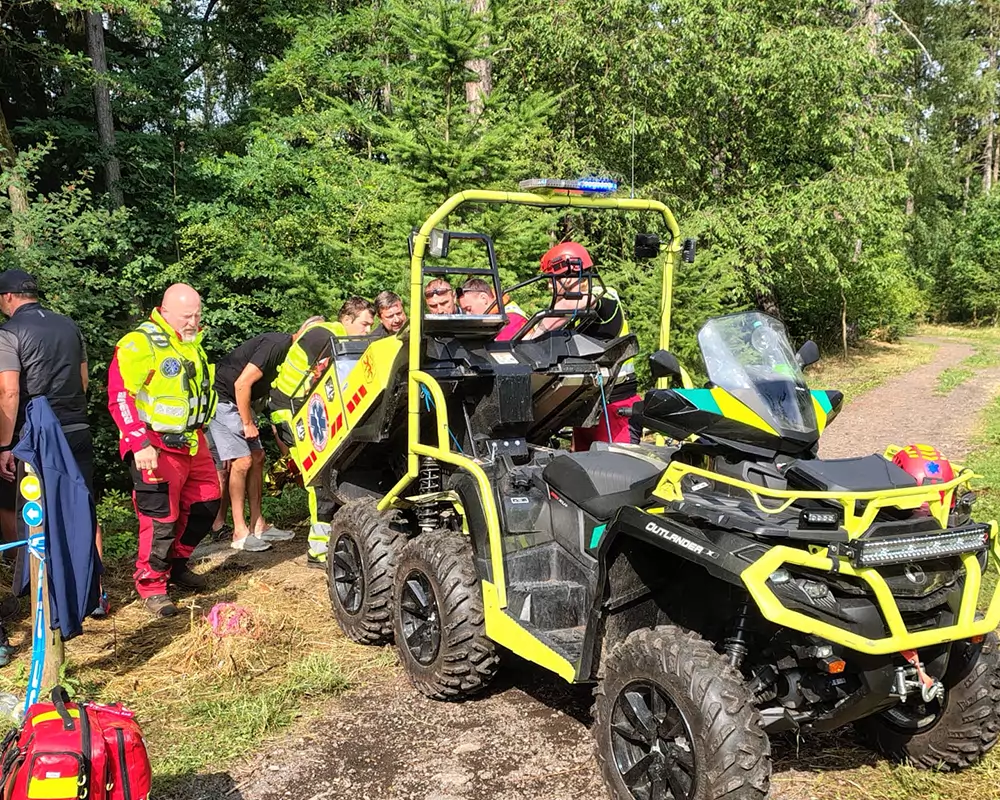

MZS přináší kraji schopnost rychle vytvořit přímo v místě mimořádné události samostatně fungující zdravotnický a logistický Stabilizační bod. Ten umožňuje soustředit zdravotnickou pomoc v postižené oblasti, zajistit příjem a ošetření zraněných a vytvořit zázemí pro jejich další transport do specializovaných zdravotnických zařízení.
Právě schopnost vytvořit takový bod v podmínkách narušené infrastruktury, omezené dostupnosti zdravotnických zařízení nebo přetížení standardních kapacit představuje zásadní přínos MZS pro krizovou připravenost kraje.

MZS je komplexní systém zdravotnické, záchranné, logistické a humanitární podpory určený pro nasazení při rozsáhlých mimořádných událostech, kdy je nutné rozšířit dostupné kapacity a zajistit kontinuitu péče o postižené osoby. Základním principem systému je návaznost jednotlivých fází záchrany: